Captures d'écran
Survolez l'image avec le curseur de la souris pour afficher la version originale.
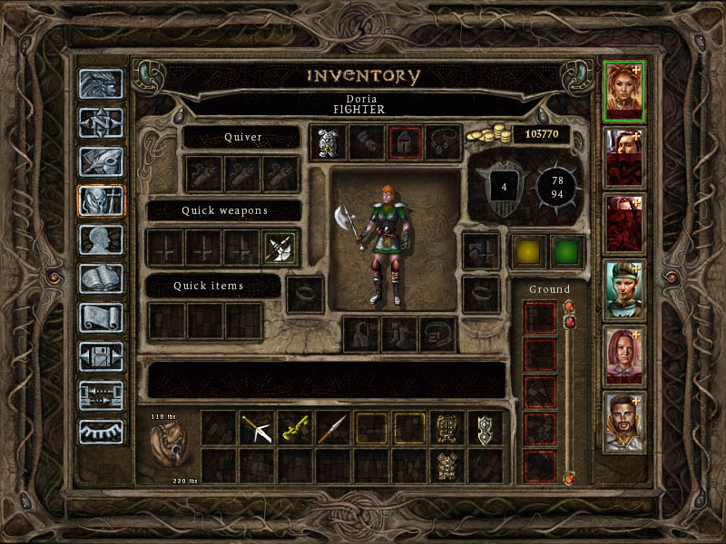

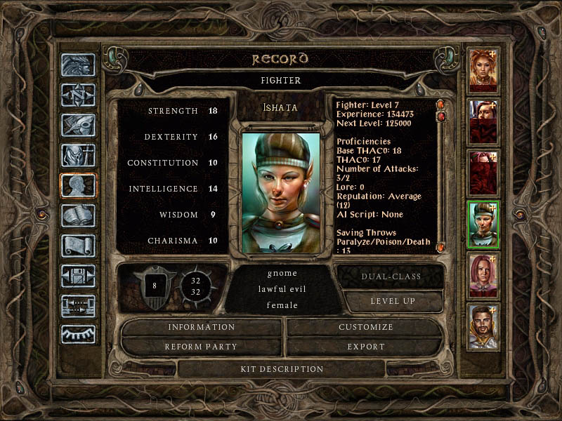
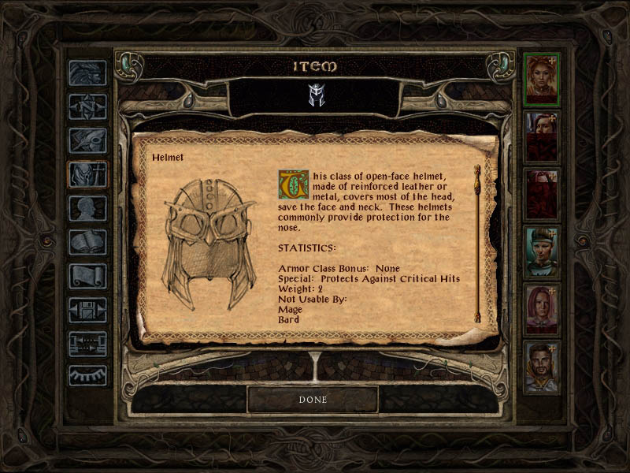

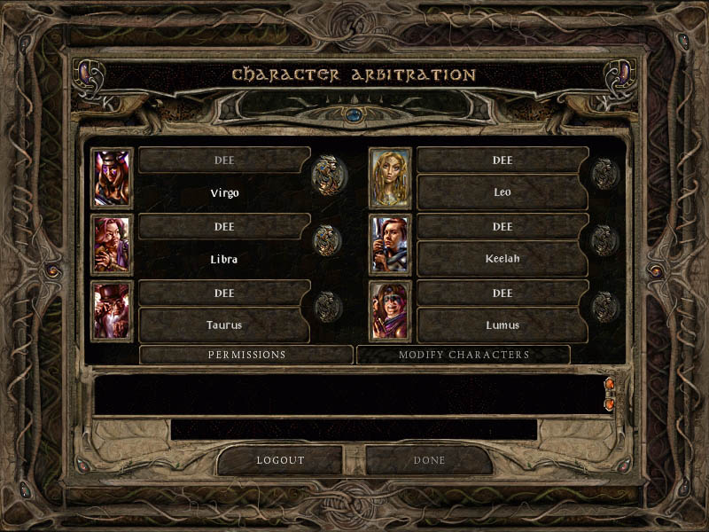
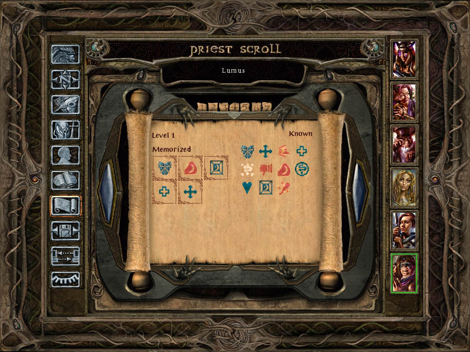


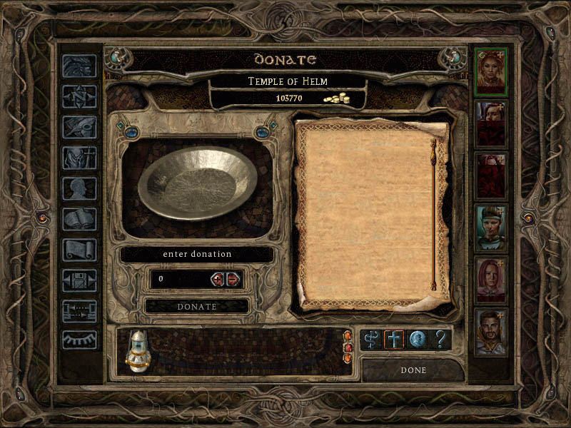
Écrans de chargement de ToB avec le design de ceux de BG2 SoA (exemples) :
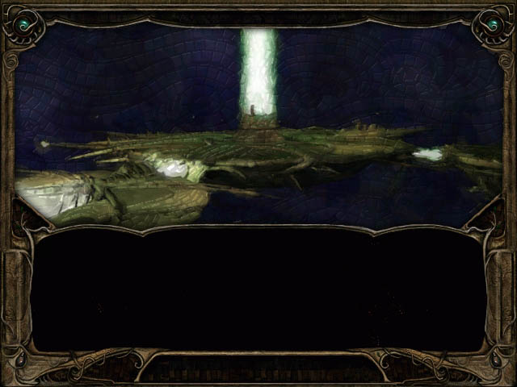 

•HAUT DE PAGE
Un mod de Spellhold Studios pour les jeux Infinity Engine
Survolez l'image avec le curseur de la souris pour afficher la version originale.
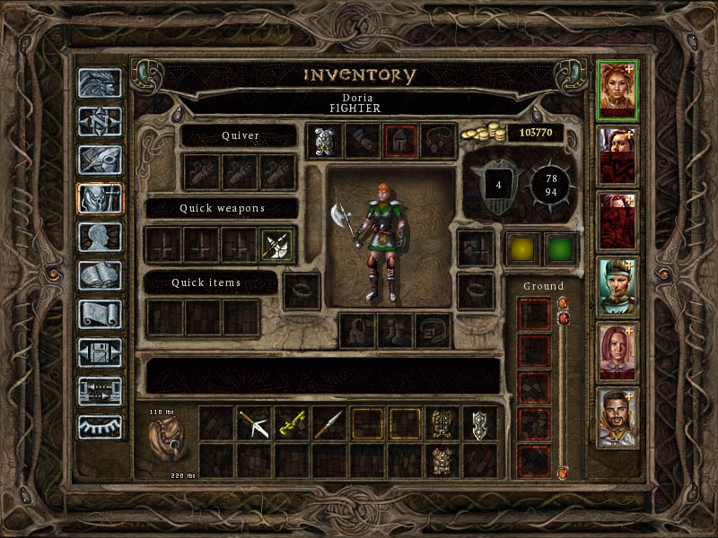
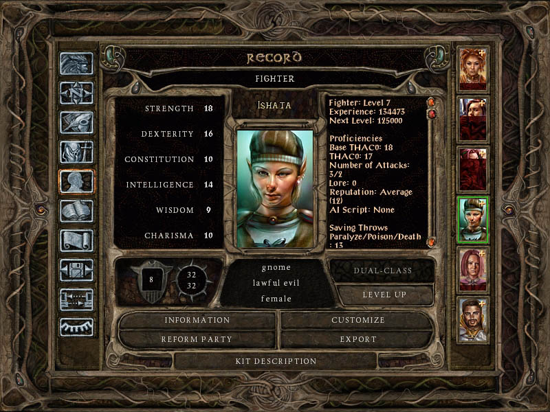
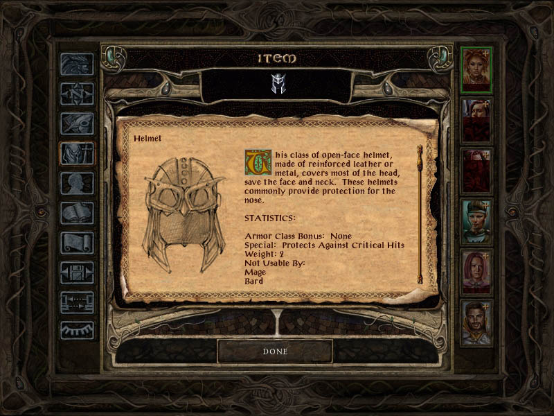
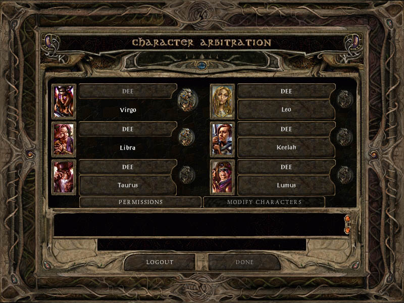
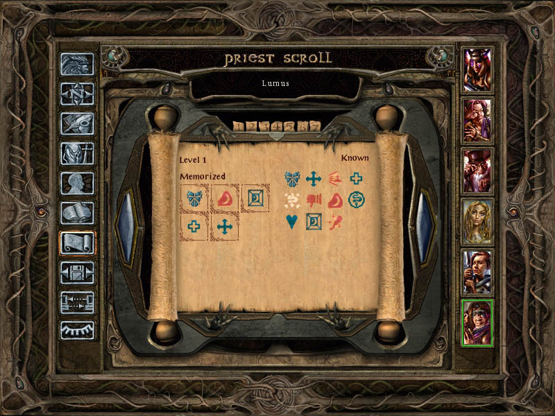
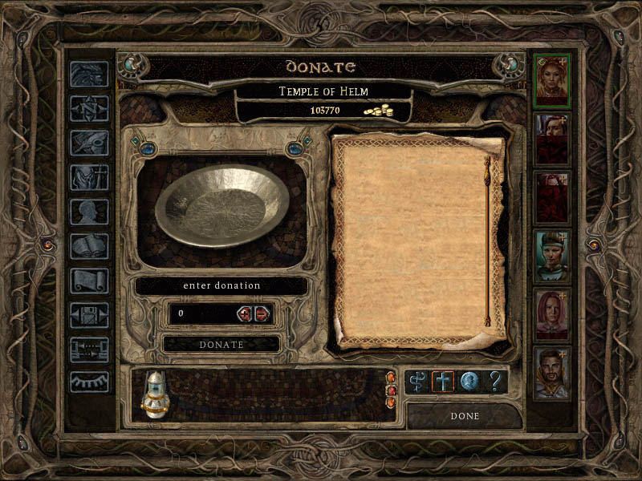
Écrans de chargement de ToB avec le design de ceux de BG2 SoA (exemples) :